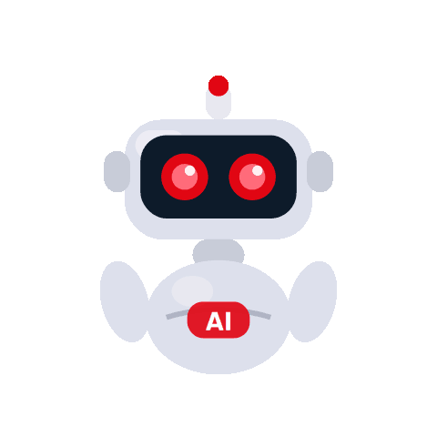

An AI system that turns raw, code-switched meeting audio — Algerian Darija, French, English — into structured Minutes of Meeting, with a RAG assistant to query them afterward.
Ask questions about your meeting history in plain language — Darija included — and get answers grounded in your actual transcripts and generated minutes.
Drop in notes, upload audio, or record live. MoM-DIALECTA detects the languages in play, translates as needed, and generates a professional, structured Minutes of Meeting.